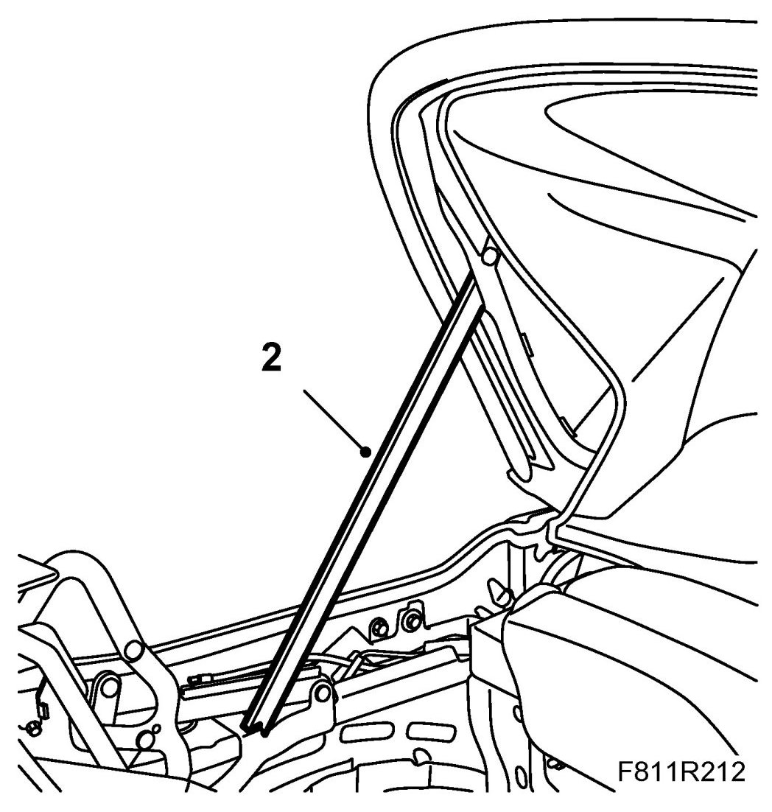
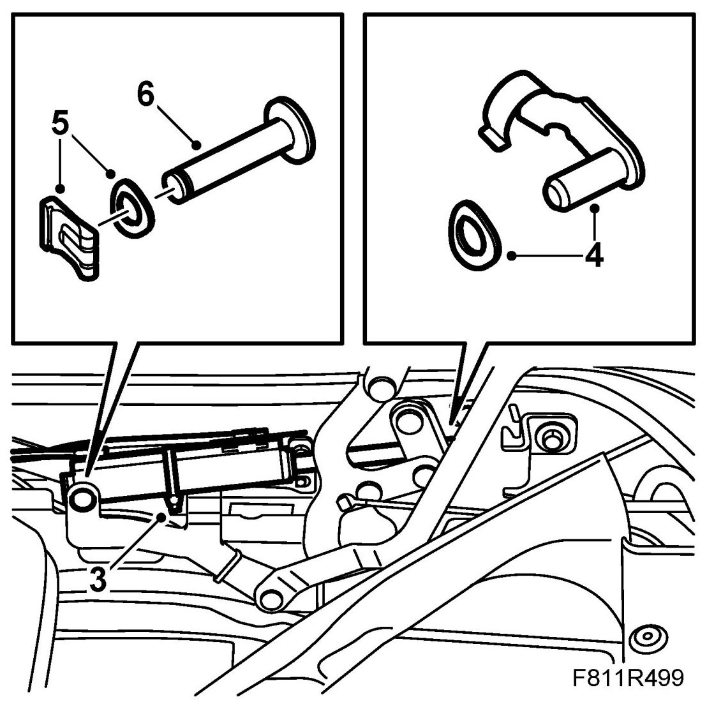
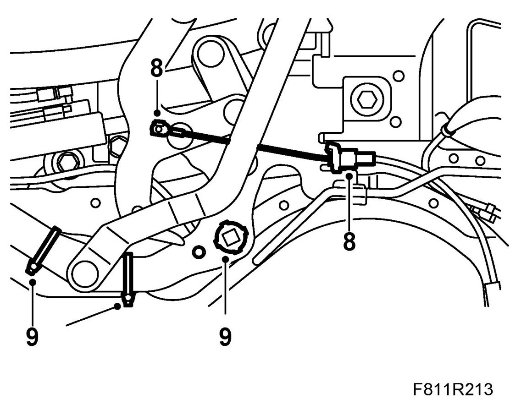
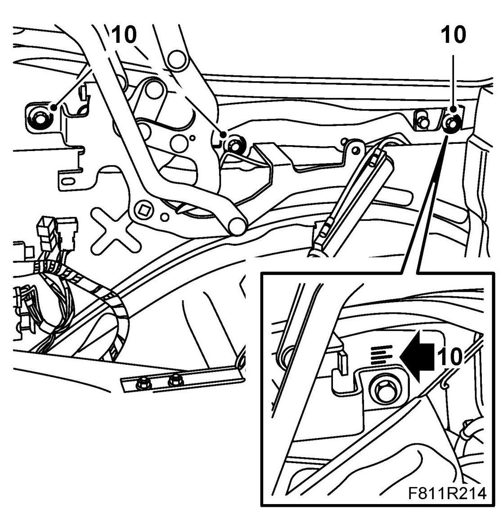
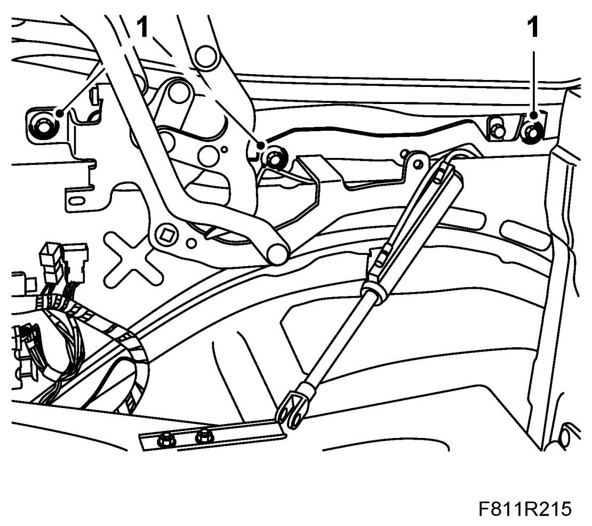
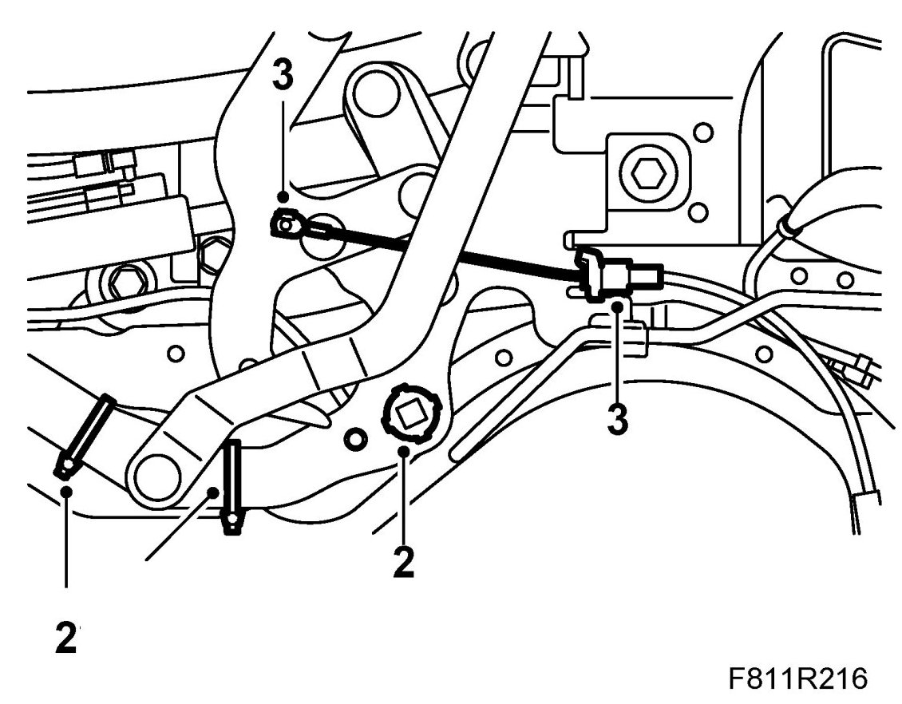
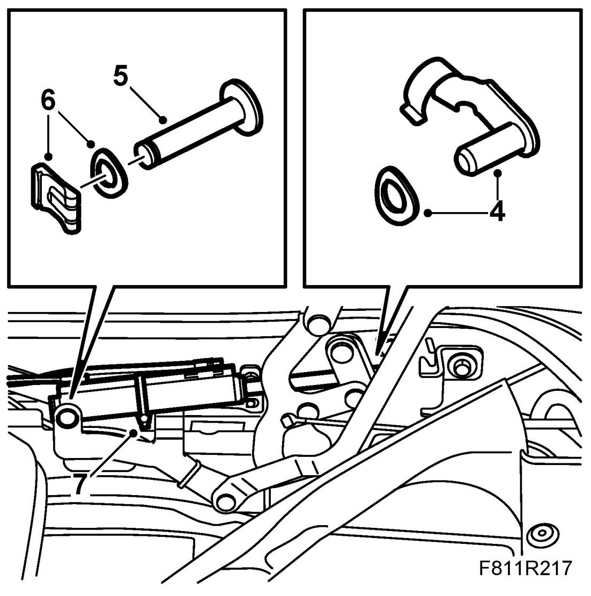

Soft Top Cover, Hinge
Soft Top Cover, Hinge
To remove
1. Remove Soft top cover.
2. Raise the sixth bow and support it with 82 93 847 Soft top support.

3. Remove the cable tie on the position sensor cable. Note the location of the cable ties.

4. Remove the clip for the hydraulic cylinder piston rod.
5. Remove the clip for the hydraulic cylinder fastening pin.
6. Remove the hydraulic cylinder fastening pin. Observe the accompanying washer.
7. Lift away the hydraulic cylinder.
8. If the right-hand soft top cover hinge is being changed, loosen the cable to the soft top storage.

9. Remove the position sensor with plastic holder and cable tie from the soft top cover hinge.
10. Remove the hinge bolts. Note the graduation on the rear bolt to facilitate refitting.

11. Remove the soft top cover hinge.
To fit
1. Place the soft top cover hinge in mounting position so that the rear bolt is in the same position as before removal. Fit the bolts for the soft top cover hinge.

2. Fit the position sensor with plastic holder. Fit the cable ties.

3. If the right-hand soft top cover hinge has been replaced, fit the cable to the soft top storage.
4. Place the hydraulic cylinder in mounting position. Fit the fastening pin for the hydraulic cylinder piston rod in the soft top cover hinge.
IMPORTANT: Cables to hydraulic lines and position sensors must be refitted as they were earlier or there will be a risk of them being damaged when the soft top and soft top cover are operated.

5. Fit the retaining pin for the hydraulic cylinder to the soft top cover hinge. Note the accompanying washers.
6. Fit the clip for the fastening pin to the hydraulic cylinder.
7. Fit the cable ties for the position sensor cable.
8. Fit Soft top cover and remove the soft top support. Adjust the soft top cover and hinges where appropriate.
Operate the soft top and check the function of the soft top cover.